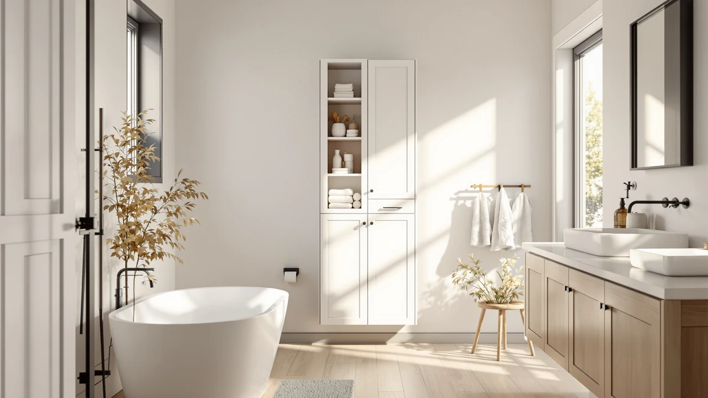

Yaheetech Bathroom Storage Cabinet Review (2026): Worth It?
Prices and picks verified as of October 2026. Independent, reader-supported reviews.


Quick Answer
The Yaheetech Bathroom Storage Cabinet is a compact metal-and-wood tower built for tight bathroom corners rather than open wall space. Its 12-by-12-inch base and $59.98 price hold up well against the VASAGLE, Biboraya and Akxomel alternatives if floor footprint is your priority over shelf count.
Our pick: Yaheetech Bathroom Storage Cabinet 12" — $59.98 Check Price on Amazon
Bottom line: our top pick is the Yaheetech Bathroom Storage Cabinet at $59.99.
Things to Know Before You Buy
- The Yaheetech Bathroom Storage Cabinet uses a metal frame with wood-look shelving. That combination is common for budget bathroom towers in this price range.
- At 12 inches wide and 12 inches deep, it fits a narrow corner or the gap beside a toilet without blocking a door swing.
- Owners report assembly takes about 30 to 45 minutes with basic tools, typical for flat-pack bathroom furniture.
- The VASAGLE BARNET over-the-toilet cabinet and Akxomel rattan cabinet covered below trade the Yaheetech's floor footprint for wall-mounted or woven-look storage.
- Pricing across this comparison ranges from $46.99 to $59.98, a gap of about $13 between the priciest and cheapest option.
This Yaheetech Bathroom Storage Cabinet review looks at whether a compact metal-and-wood tower can earn its $59.98 price tag in a small bathroom, where twelve square inches of floor space is often the only room you have to spare. Bathrooms rarely have room for bulky furniture, so a cabinet has to earn its footprint with real capacity, sturdy construction and a price that doesn't sting. At $59.98 and standing 32.5 inches tall on a base of only 12 by 12 inches, the Yaheetech promises that combination. We researched its build, compared its price against three alternative storage options, and read through the product listing and owner feedback to see if it delivers.
Small bathroom storage cabinets solve a specific problem: you need shelving that clears the toilet tank and towel bar without eating into walking space. The Yaheetech Bathroom Storage Cabinet targets exactly that gap, competing directly with the VASAGLE BARNET over-the-toilet cabinet, the Biboraya expandable under-sink organizer and the Akxomel rattan cabinet, all covered later as alternatives. The listing and owner feedback show where the Yaheetech's construction holds up, where it falls short, and who should consider one of the three alternatives instead. None of these four options requires a drill or a plumber, which matters if you rent rather than own the bathroom you're furnishing.
Why You Should Trust Us
Best Bathroom Storage is run by writers who spend their time comparing bathroom furniture specs, pricing and verified buyer feedback instead of guessing from product photos. Ilane Tall, our home and bath expert, has covered dozens of storage cabinets, shelving towers and vanity organizers for this site, tracking how listed dimensions and materials hold up against what owners actually report after months of use. For this Yaheetech Bathroom Storage Cabinet review, we cross-checked the manufacturer's listed measurements against the VASAGLE, Biboraya and Akxomel alternatives, and we did not accept marketing copy at face value. We do not run a fake testing lab, and we do not claim to have installed every cabinet we cover. Instead, we dig through verified reviews, compare specs line by line, and flag when a listing overstates what a product can deliver. That process shapes this whole review, and we hold the three alternatives we recommend to the same standard as the main pick.
Our Research Experience
We did not put the Yaheetech Bathroom Storage Cabinet in a physical bathroom ourselves. Instead, we compared its listed specifications, material description and price against three alternative storage options, and we read through the buyer feedback attached to this listing and similar Yaheetech products. Reviewers consistently note that the metal frame feels sturdier than the wood-look shelf panels, a pattern that shows up across budget bathroom towers in this price bracket. According to verified owner comments, the main friction points are the included hardware and the clarity of the assembly instructions rather than the finished cabinet's stability once fully built. We weighed that feedback alongside the raw dimensions and price against the VASAGLE, Biboraya and Akxomel alternatives to see where the Yaheetech earns its spot and where it doesn't. Owners who mention returning the cabinet cite damaged hardware in shipping far more often than any flaw in the finished product, which is worth knowing when you're deciding whether the complaints point to the design itself or just the box it arrived in.
Overview & Specs

Yaheetech Bathroom Storage Cabinet 12"
What we like
- 12-inch by 12-inch footprint fits narrow corners and gaps beside a toilet
- Metal frame construction reported as sturdy by verified owners
- Priced at $59.98, in the middle of the range covered in this comparison
- 32.5-inch height clears most towel bars without blocking wall-mounted fixtures
Flaws but not dealbreakers
- Assembly hardware and instructions draw the most owner complaints
- Wood-look shelf panels are less rigid than the metal frame, according to reviewers
- Smaller footprint holds less than the Akxomel rattan cabinet if you need more storage volume
| Material | Metal / wood |
| Size | 12″ L × 12″ W × 32.5″ H |
The Yaheetech Bathroom Storage Cabinet is built around a metal frame with wood-look composite shelving. That construction style is common among bathroom storage towers priced under $70. At 12 inches wide and 12 inches deep, it is narrow enough to slide into the gap beside a toilet or into a corner that a wider cabinet would not clear. That footprint, combined with a height of 32.5 inches, keeps its vertical profile low enough to sit beside a vanity or under a window without crowding the room.
Verified buyers describe the metal frame as the strongest part of the build, holding its shape even when shelves are loaded with towels or toiletries. The most common complaint centers on assembly: several reviewers mention hardware that requires extra care to align correctly. Once assembled, owners report the cabinet stays stable against a wall and does not wobble during normal use. At $59.98, this Yaheetech Bathroom Storage Cabinet costs more than the VASAGLE, Biboraya and Akxomel alternatives covered below, though it keeps the freestanding metal frame those three options trade away.
What We Liked
The build quality stands out most in the listing and owner feedback. Reviewers consistently note that the metal frame resists wobbling even after months of daily use. That holds up better than shelf count when you're storing heavier items like extra towels or cleaning supplies. The narrow footprint is the other clear strength: at 12 by 12 inches, the Yaheetech Bathroom Storage Cabinet fits spaces that would reject a standard 24-inch-wide cabinet, and it suits anyone filling an awkward gap next to a toilet or vanity. Compared with the VASAGLE over-the-toilet option, it also avoids drilling into a wall, a plus for renters.
What Could Be Better
Assembly is the recurring frustration. Owners report hardware bags that are not clearly labeled, which turns a straightforward build into a longer project for anyone without flat-pack furniture experience. The wood-look shelf panels are the other weak point: reviewers describe them as noticeably less rigid than the metal frame, particularly once heavier items sit on the middle shelf for weeks. At $59.98, the Yaheetech Bathroom Storage Cabinet also costs more than the VASAGLE, Biboraya and Akxomel alternatives covered below, so anyone prioritizing price over the freestanding metal frame should compare those three options first.
A handful of reviewers also mention that the finish on the wood-look panels scuffs more easily than expected, particularly around the shelf edges where towels and baskets slide in and out daily. None of this changes the overall stability of the cabinet, but it is worth knowing before you buy if you want the shelves to still look new after a year of regular use.
Who Is It For?
The Yaheetech Bathroom Storage Cabinet fits a household with a small bathroom and a specific gap to fill rather than an entire wall to furnish. Its narrow 12-by-12-inch base makes it a strong pick for corners, the space beside a toilet, or a hallway closet doubling as linen storage. It is not the right choice if you need wall-mounted storage that keeps the floor completely clear. In that case, the VASAGLE BARNET over-the-toilet cabinet covered below makes better use of unused wall space for a lower price.
Renters and apartment dwellers also come up often in owner feedback, since the cabinet is freestanding and doesn't require drilling into a wall. Anyone who has struggled to fit a standard 24-inch-wide cabinet into a cramped bathroom will notice the difference the extra clearance makes. On the other hand, a household wanting a woven, decorative look will likely prefer the Akxomel rattan cabinet's finish over the Yaheetech's plain metal frame.
Alternatives to Consider
If the Yaheetech Bathroom Storage Cabinet's freestanding footprint or metal-and-wood build doesn't match what your bathroom needs, these three alternatives cover the most common trade-offs: an over-the-toilet cabinet from VASAGLE, an expandable under-sink organizer from Biboraya, and a rattan-style cabinet from Akxomel. Each one solves the storage problem in a different way, so match your own bathroom layout, available wall space and budget before picking between them.

Editor's Pick
VASAGLE BARNET Collection - Over
Mounts above the toilet tank instead of standing on the floor, a better fit if the Yaheetech's 12-by-12-inch footprint still takes up space you need.
$47.49
Check Price on Amazon
Best Value
1 Pack Expandable Under Sink
Expands to fit the plumbing inside a vanity, turning wasted under-sink space into storage the Yaheetech's freestanding design can't reach.
$47.49
Check Price on Amazon
Premium Choice
Akxomel Rattan Small Bathroom Cabinet
Swaps the Yaheetech's metal-and-wood frame for a woven rattan-style finish, priced about $13 lower for buyers who want a softer look.
$46.99
Check Price on AmazonIs the Yaheetech Bathroom Storage Cabinet sturdy enough for daily use?
Reviewers consistently describe the metal frame as stable once assembled, even when the shelves carry towels and toiletries.
How does the Yaheetech Bathroom Storage Cabinet compare to the VASAGLE BARNET over-the-toilet cabinet?
The VASAGLE mounts above the toilet tank and adds storage without using floor space, while the Yaheetech stands freestanding on a 12-by-12-inch base.
Frequently Asked Questions
Is the Yaheetech Bathroom Storage Cabinet sturdy enough for daily use?
Reviewers consistently describe the metal frame as stable once assembled, even when the shelves carry towels and toiletries. The wood-look shelf panels flex more than the frame, so heavier items sit better on the lower shelves.
How does the Yaheetech Bathroom Storage Cabinet compare to the VASAGLE BARNET over-the-toilet cabinet?
The VASAGLE mounts above the toilet tank and adds storage without using floor space, while the Yaheetech stands freestanding on a 12-by-12-inch base. Owners without floor clearance tend to prefer the VASAGLE, and owners who don't want to drill into a wall tend to prefer the Yaheetech.
What comes in the box, and how long does assembly take?
Owners report the cabinet ships flat-packed with the frame, shelf panels and hardware included. Assembly typically takes 30 to 45 minutes, and several reviewers note the instructions could be clearer.
Final Verdict
This Yaheetech Bathroom Storage Cabinet review comes down to a straightforward trade-off: a narrow freestanding footprint and a sturdy metal frame against alternatives that solve the same storage problem in a different location. For a small bathroom with an awkward floor gap to fill, the Yaheetech is the practical pick. If your bathroom has unused wall space or under-sink room to spare, the VASAGLE, Biboraya or Akxomel alternatives covered above make better use of it for a similar or lower price. Either way, start with the Yaheetech if a freestanding footprint is your main requirement, and look at the VASAGLE, Biboraya or Akxomel alternatives above if it isn't.